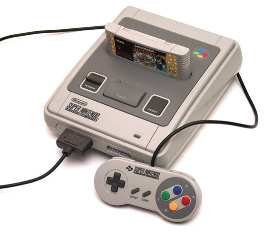

La Super Nintendo Entertainment System, abreviada habitualmente como Super Nintendo, Super NES o SNES, también llamada Super Famicom originalmente en Japón. La Super Famicom se lanzó en Japón el miércoles 21 de noviembre de 1990 por 25.000¥ (US$210). Fue un éxito inmediato; las primeras 300.000 unidades se vendieron en apenas horas. Es la tercera videoconsola de sobremesa de Nintendo y la sucesora de Nintendo Entertainment System (NES) en América y Europa. Mantuvo una gran rivalidad en todo el mundo con la Sega Mega Drive (o Sega Genesis) durante la era de 16 bits.
Fue la más exitosa y vendida de la era de los 16 bits. Gracias al chip Super FX, la SNES tuvo los primeros videojuegos totalmente tridimensionales en la consola, siendo Star Fox el primer videojuego para consola de videojuegos con gráficos completamente tridimensionales. En España, el eslogan de la consola fue «El cerebro de la bestia» y «Super 16 bits».

Características
UNIDAD CENTRAL
El procesador es Ricoh 5A22, basado en el procesador WDC W65C816 de 16 bits. La velocidad de reloj es de 1.79, 2.68 MHz, o 3.58 MHz (NTSC);4647 1,77 MHz, 2,66 MHz o 3,55 MHz (PAL).
La memoria RAM principal es de 128 KB.
Características adicionales: DMA y HDMA, Programado IRQ, Procesamiento paralelo I / O, Multiplicación y división de hardware.
VIDEO
Circuitos S-PPU1 y S-PPU2, unidades de procesamiento de imagen de 16 bits.
La paleta tiene 32 768 Colores.
Colores en pantalla: 4096. Según el modo gráfico: ejemplo, 241 en mode 1 o 256 en modo 7, sin contar sub-blending.
Resolución: 256x224 a 512x448.4647 La mayoría de los juegos usan 256x224, 320x224 o 400x300 píxeles; había trucos de programación para obtener 512x4484647 pero era usado raramente.
El máximo de sprites en pantalla son 128 (32 por línea) y el máximo número de píxeles de sprites en un scanline 256. El generador de imágenes tiene un error de software el cual se deshacía de los sprites más cercanos en vez de los más lejanos si un scanline excedía el límite. Modos de pantalla más comunes: Modo 1 texto píxel a píxel (16 colores por tile; 3 capas de scroll) texto affine mapped, modo 7 (256 colores por tile; una capa de rotación/escalado).
Vídeo RAM: 64 Kb.
AUDIO
Aquí podemos diferenciar el Coprocesador de sonido: Sony SPC700 de 8 bits y Procesador digital de sonido: S-DSP de 16 bits.
El Sony SPC700 trabaja a una velocidad de reloj: 1.024 MHz. El tamaño de Rom de arranque es de 64 bytes.
Audio RAM: 512 Kb (64 KB)4647 (compartida entre los dos chips).
El procesador digital de sonido: S-DSP de 16 bits.4647 tiene de canales de sonido 8.
Formato de sonido: ADPCM,4647 usa samples en forma de onda comprimidos mediante el algoritmo de compresión BBR. La calidad de sonido: 32 kHz de 16 bits4647 en estéreo. El tiempo de Ciclo de Memoria: 279 ns.
Efectos de sonido: Panning de voces, envolvente acústico, eco, generación de ruido y modulación de tono.
Modulador de pulsos de códigos: 16 bits.